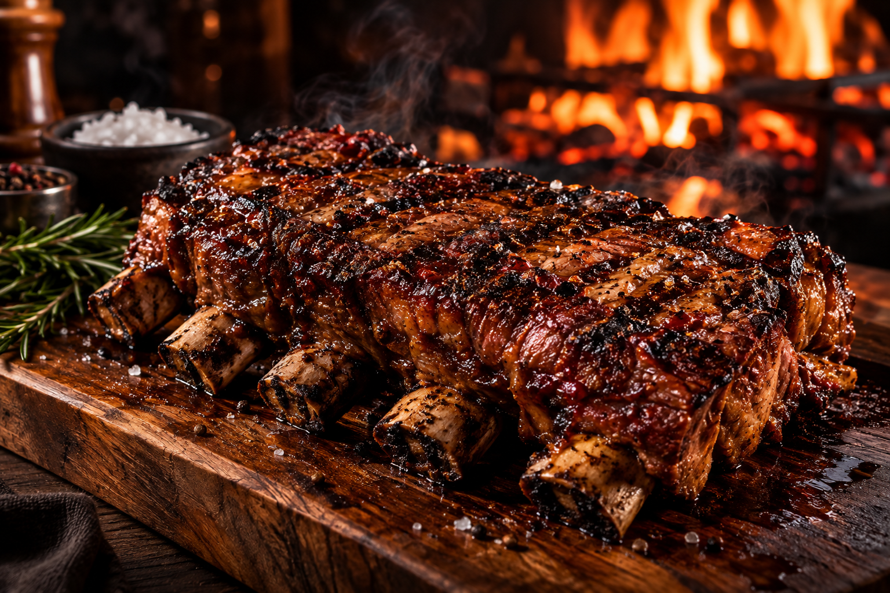
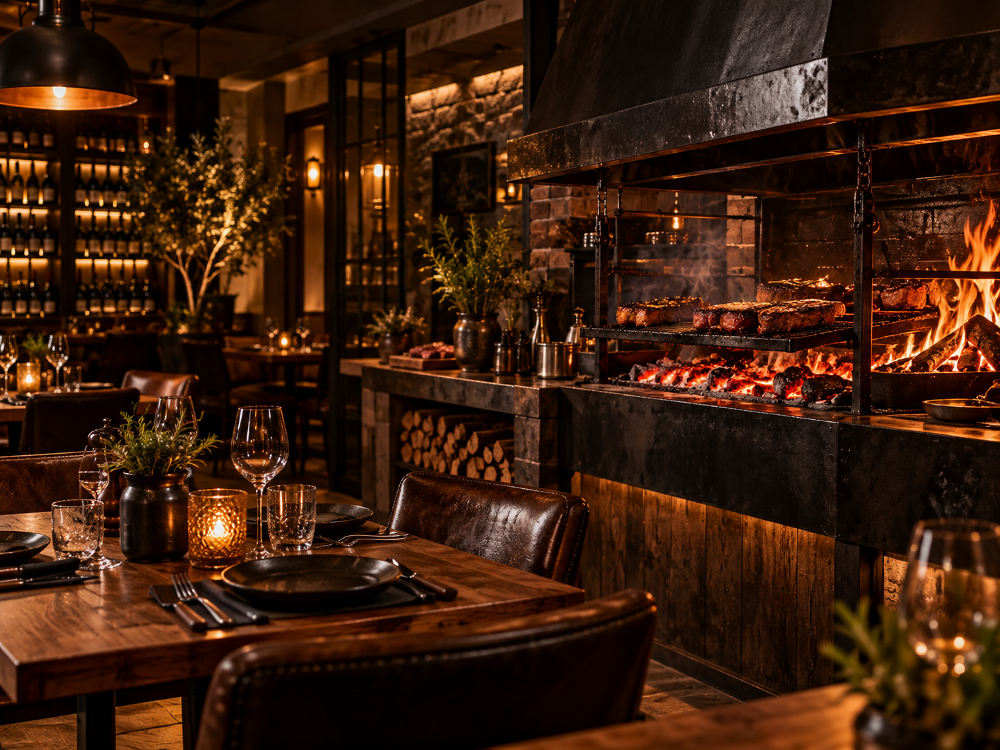

SABOR QUE MARCA
O verdadeiro sabor da brasa.
Pratos preparados com ingredientes selecionados e aquele sabor especial feito na brasa.
Ver cardápioNosso cardápio
Confira alguns dos nossos pratos mais pedidos.

🔥 NOSSA HISTÓRIA
Sobre o Sabor & Brasa
O Sabor & Brasa nasceu da paixão por boa comida, bons momentos e pelo sabor único dos alimentos preparados na brasa.
Trabalhamos com ingredientes selecionados e preparo cuidadoso para oferecer uma experiência marcante em cada prato.
Conheça nosso espaço
📍 VENHA NOS VISITAR
Estamos esperando por você
Rua das Palmeiras, 250 — Goiânia, GO
Terça a domingo — 11h às 23h
Pedir pelo WhatsApp